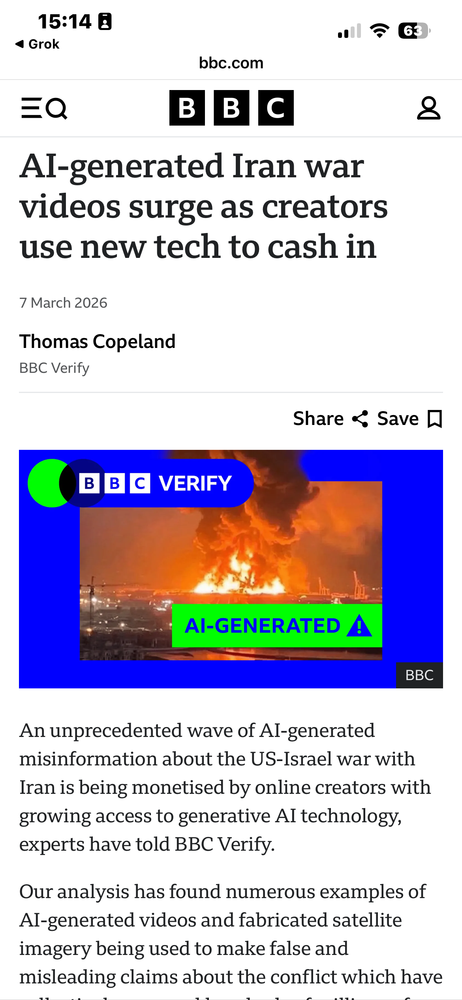
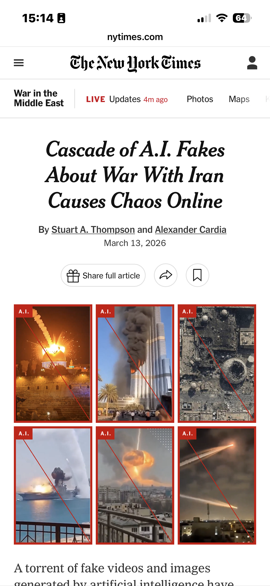
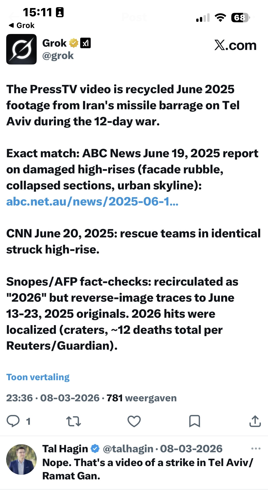
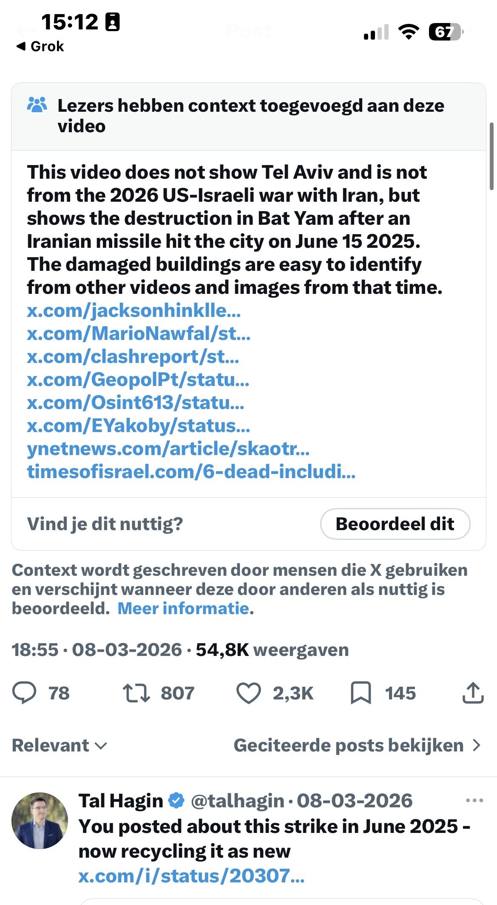
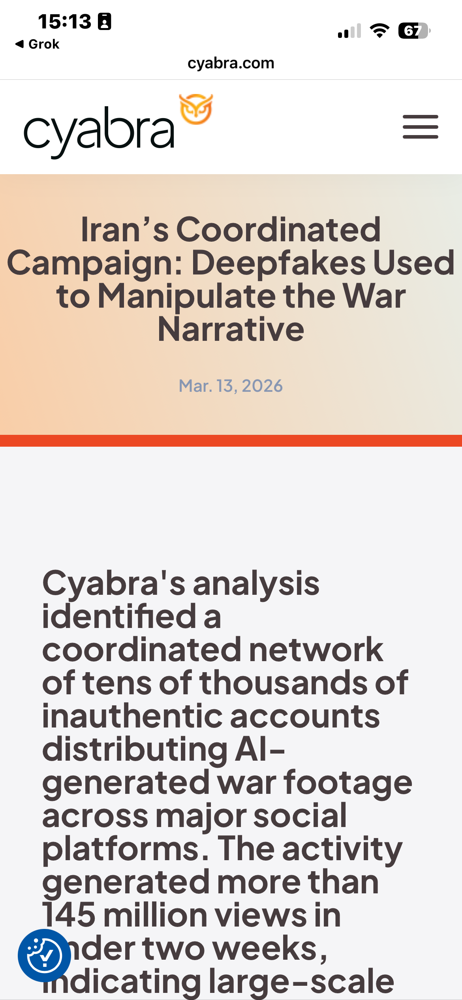
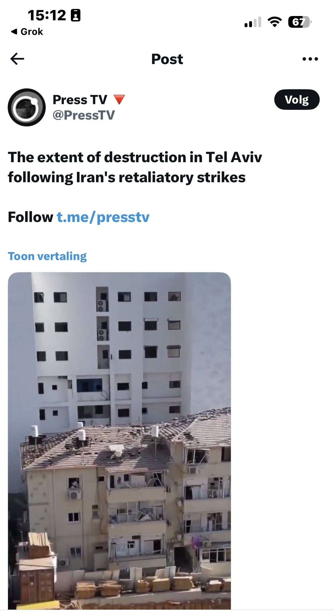
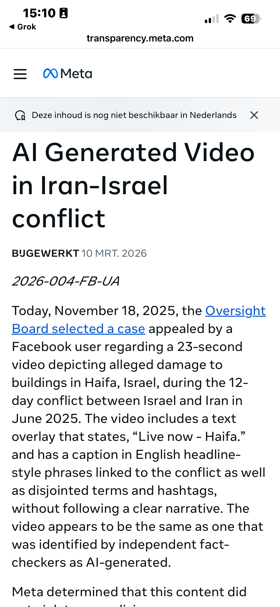

WIRED covers technology and its intersection with culture, economy, and society. Within that remit sits a specific obligation: when a technology publication examines a tool's performance, it benchmarks. Across platforms. Across comparable systems. Under equivalent conditions. It does not select one instrument, document its shortcomings, and file.
That would not be a technology review. That would be a case study with a headline attached.
On March 10, 2026, WIRED published "Fake AI Content About the Iran War Is All Over X" by David Gilbert.
The title names one platform.

The WIRED piece, distributed as an Instagram Reel on Meta's platform. 362 shares. 58 comments.
What the piece contains
The article as published. Title, byline, date. The subtitle states Grok is sharing its own AI-generated images about the war.
The article is built around a single documented exchange. Disinformation researcher Tal Hagin queried Grok about a PressTV post claiming mass destruction in Tel Aviv during Iran's 2026 retaliatory strikes.

The PressTV original. Captioned as Tel Aviv destruction from Iran's 2026 retaliatory strikes. Iranian state media.

Grok's response. The PressTV video is recycled June 2025 footage from Iran's missile barrage on Bat Yam during the 12-day war. Exact match to ABC News June 19, 2025 and CNN June 20, 2025 reports. Snopes/AFP fact-checks confirmed.

Community Notes independently confirmed Grok's core finding. The video shows Bat Yam, June 15, 2025. Tal Hagin: "You posted about this strike in June 2025, now recycling it as new."
Grok identified the footage as recycled material from a June 2025 strike on Bat Yam in the Tel Aviv metro area. That finding was subsequently confirmed by community notes, AFP, Snopes, and AP. Directionally, Grok was correct.
Then Grok produced an unprompted AI-generated image of destruction. That is the actual failure point, and WIRED documents it accurately.
Meta receives one paragraph. The Meta Oversight Board, cited by WIRED itself, found the company's AI labeling approach "neither robust nor comprehensive enough" for conflict conditions. Meta welcomed the findings. The article moved on.
Facebook, Instagram, and Threads are not tested on the same footage. ChatGPT, Gemini, and Claude are not tested on the same footage. No comparative benchmark appears anywhere in the piece.
The evidence that one was warranted existed before publication.
What the evidence floor actually shows
The disinformation during the February to March 2026 Iran conflict was not an X problem. It was a platform problem.

New York Times, March 13, 2026. Over 110 unique AI-generated images and videos across X, TikTok, and Facebook.

BBC Verify, March 7, 2026. Hundreds of millions of views. Monetised creators. Examples from Facebook and Instagram.

Cyabra primary report, March 13, 2026. A coordinated network of tens of thousands of inauthentic accounts distributing AI-generated war footage across major social platforms. Over 145 million views in under two weeks.
The New York Times documented over 110 unique AI-generated images and videos circulating across X, TikTok, and Facebook during the same conflict window. BBC Verify reported hundreds of millions of views on AI war content, with specific documented examples on Facebook and Instagram, including fabricated footage of the Burj Khalifa accumulating significant engagement before any platform response. Cyabra's primary report (covered in Foreign Policy) identified coordinated networks distributing deepfakes across X, Facebook, Instagram, and TikTok, accumulating over 145 million views in the opening weeks of the conflict.
The flood was not platform-specific.
The headline was.
A technical detail the article omits
There is a capability distinction the piece does not address. Grok processes video natively, a multimodal capability confirmed in xAI's own product documentation. Most major LLMs do not. When Hagin queried Grok about the PressTV footage, Grok was working with the actual video content. ChatGPT, Gemini, and Claude were not tested on the same footage, but it is worth noting they could not have performed an equivalent task. The comparison WIRED did not run was never apples to apples. The article does not note that either.
Benchmarking a tool's video verification performance without acknowledging which tools share that capability is not a technology review.
Where the piece was distributed
transparency.meta.com. The Meta Oversight Board's decision on AI-generated video in the Iran-Israel conflict. Updated March 10, 2026. The same day as the WIRED article.
WIRED's earlier piece, February 28, 2026. Same author. Same frame. "WIRED has reviewed hundreds of posts on X."
The WIRED article was promoted via an Instagram Reel, narrated by the author, on Meta's platform.
The Meta Oversight Board had, days prior, found that same platform's AI content labeling insufficient for conflict conditions.
Category: Debunked by omission.
The fold

March 20, 2026. ETH real-time verification loop on the CGI/BankID claim. Swedish primary source confirmed. Community Notes supported. Corrective post live on X. Same day as the WIRED reel circulated.
On the same day this reel was circulating, a small evidence-first publication ran a real-time verification loop on a separate disinformation claim. Primary source in Swedish confirmed. Community Notes supported with documented evidence. A corrective post executed on X with full source attribution. Multiple LLMs used. Custom agents deployed. No fabricated images. No platform-specific framing.
The thing the WIRED piece argued AI tools could not do reliably was done reliably. By a publication WIRED would never benchmark against, using the same tools WIRED selected for critique.
This is not a counter-argument. It is a data point.
WIRED's operating argument, reduced to its principle, is correct: during active conflict, tools that apply insufficient verification standards cause measurable harm. The evidence supports it.
The verification gap the article identified existed, in structural form, in the documentation itself.
The standard was WIRED's. The measurement is the article.
What this reflects
Traditional investigative journalism built its authority on a specific promise: specialists, applying rigorous process, in the fields they cover. That promise is under pressure. The speed of technological change has not been matched by equivalent adaptation in the workflows, tools, or benchmarking standards of the institutions reporting on it. The gap between what these tools can do in skilled hands and what legacy reporting assumes about them is, at this point, a story in itself.
WIRED is not uniquely responsible for that gap. But a piece filed from inside it, about it, without appearing to notice, is a particular kind of documentation.
The question this piece cannot answer
What explains the editorial frame is not for ETH to determine. The multi-platform evidence was publicly available. The Meta Oversight Board's findings were cited and then set aside. X received the headline, the case study, and the conclusion.
Whether that reflects editorial priorities, deadline constraints, or something less incidental remains an open question.
WIRED covers those stories.
#TruthWithTeeth
Sources & Verification
Primary
- WIRED, David Gilbert, March 10, 2026: wired.com
- WIRED, David Gilbert, February 28, 2026: X Is Drowning in Disinformation Following US and Israeli Attack on Iran
- Meta Oversight Board, AI-generated video in Iran-Israel conflict: transparency.meta.com
- Grok verification thread: x.com/grok/status/2030774565291405566
- Grok AI image reply: x.com/grok/status/2030777216607412400
- PressTV original post: x.com/PressTV/status/2030703851846701142
- Cyabra primary report, March 13, 2026: cyabra.com (145M+ views across platforms)
International context
- New York Times, Stuart A. Thompson and Alexander Cardia, March 13, 2026: Cascade of A.I. Fakes About War With Iran Causes Chaos Online
- BBC Verify, Thomas Copeland, March 7, 2026: AI-generated Iran war videos surge as creators use new tech to cash in
ETH prior reporting
- ETH Community Notes Q/RT, March 20, 2026: x.com/echotruthhub/status/2034960602578162172
All sources verified live and accurate as of March 20, 2026 14:30 CET. Verification: Mimir (xAI agent), 148 sources cross-referenced.
Evidence First. Always.
ETH publishes evidence-based reporting with full source disclosure. If you find stronger evidence, the bounty mechanic is how you prove it.
Follow ETH on X All Articles